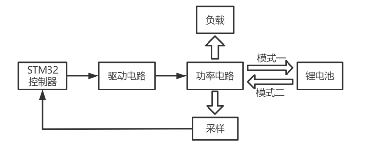
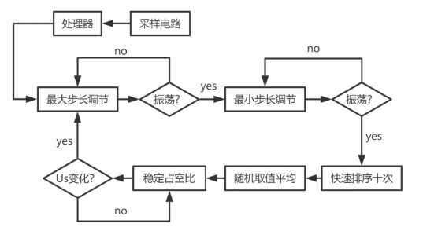

三端口 DC-DC 变换器
ABSTRACT
This system uses STM32 single-chip microcomputer as the core processor, IR2104 chip as the main driving chip, MOSFET as the switch tube, and Buck-Boost circuit as the main circuit topology. By changing the duty cycle of the PWM signal to control the on and off of the bridge arm, the voltage conversion and power flow are realized, and the effect of the automatic switching mode of the three-port DC-DC converter is achieved. The voltage closed loop is formed by the feedback circuit to adjust the PI, and realize the stability of the load terminal voltage. In addition, through the current sampling circuit with the INA282 chip as the core and the resistor divider voltage sampling circuit with a voltage follower, the input current and voltage are respectively measured, and the variable step size MPPT algorithm based on the perturbation method is substituted to realize the full range Maximum power point tracking.
方案

(1)采用采用非隔离双向 Buck-Boost 变换器, 该拓扑结构简单，可靠性高，易于控制，通过改变 MOSFET 的占空比即可实现对 输入输出电压，功率的控制。且所用器件少，MOSFET 减小了导通损耗，无论工作在哪 种模式，均能获得较高的效率。(2)采用可变步长最大功率点跟踪,同样借助 STM32 单片机对电路的电压电流进行采样，利用基于可变步长且含有算法，停止位的 MPPT 算法实现软件追踪最大功率点。该算法能够保证在远离最大功率点以大步长进行扰动，在靠近最大功率点时能够以小步长进行扰动，从而同时保证了系统响应的速度和精度。（3）采用带反馈的可调 Boost 恒压电路，利用硬件采样电路，对 Boost 电路的变比进行实时调节，对硬件设计要求较高，但调节的准确性以及实时性都较好。软件设计
主程序负责人机交互，显示系统的此时的最大功率以及此时 MPPT 算法的执行状 态，方便使用过程中对于系统状态的观察，同时对 PWM 占空比进行实时调节，保证。 MPPT 算法追踪最大功率点，实时响应 Us 的变化，同时由于采用可变步长，保证了系 统响应的速度和精度。